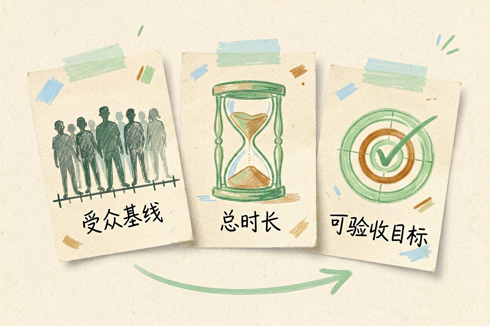
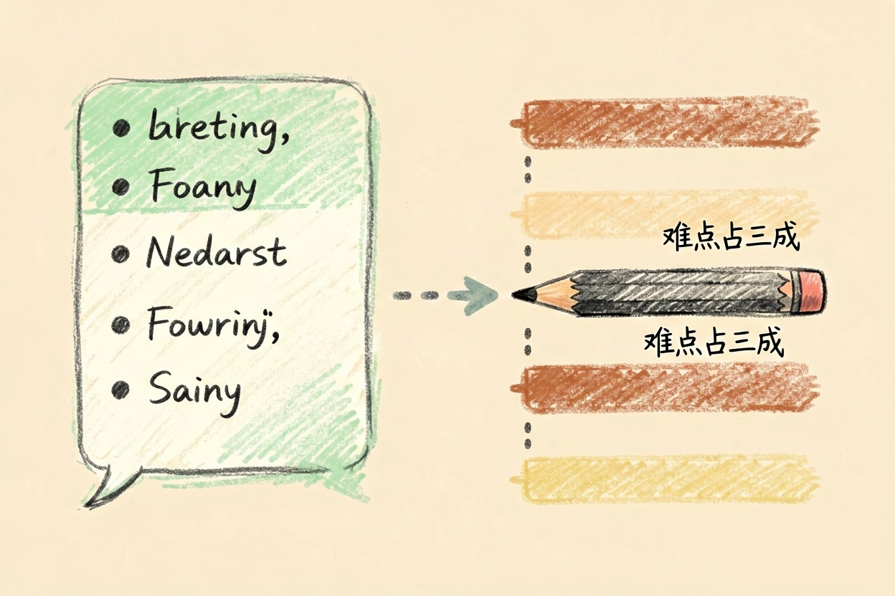
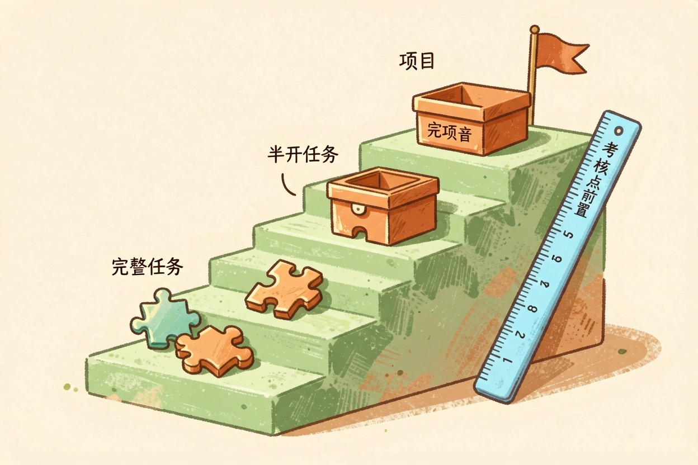
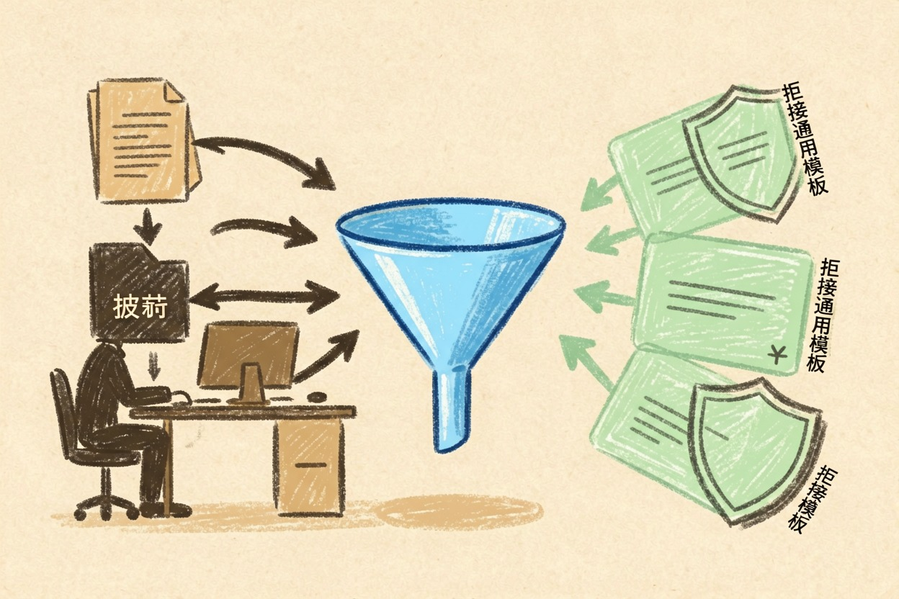

用 AI 做课程大纲？备课和内训都能直接用 — Learntide
空着文档发呆两小时，不如先让模型出一版粗骨架，你把精力放在删和改上面。
ai做课程大纲：先把三件事交代清楚

ai做课程大纲之所以经常产出废话，是因为提问时什么背景都没给。模型不知道听众是谁，只能按最大公约数写，出来的东西谁都能用，也就谁都用不上。
动手前先定三件事。第一，受众基线：他们已经会什么，最缺什么。第二，总时长：两小时的分享和十六课时的系列课，结构完全不同。第三，学完要会干什么，用可观察的动词写，比如「能独立跑通一次投放复盘」。
第三件最容易糊弄。写成「了解某某概念」，等于没写，因为没法验收。课程设计用ai的第一道门槛，就卡在这里。
受众基线拿不准就去问。开课前发三道小题，或者随手拉两个人聊十分钟，比凭印象猜准得多。这一步花的时间，后面会连本带利还回来。
让模型出模块与课时分配

三件事写清楚了，剩下的交给模型：
你是课程设计顾问。请为我输出一版课程大纲。
背景：
- 受众：市场部新人，做过投放执行，没独立带过项目
- 总时长：8 课时，每课时 45 分钟
- 学完要能：独立完成一次投放复盘并给出下阶段建议
输出要求：
1 分 4-6 个模块，每个模块标注课时数，总和必须等于 8
2 每个模块写：学习目标（用可观察动词）、核心知识点 3 条、常见误区 1 条
3 目标不许用「了解」「熟悉」「掌握」这类无法验收的词
4 最后单独列出：哪个模块最容易被砍掉，为什么
不确定的地方直接标注「需补充信息」，不要自行假设。拿到结果先看课时分配。模型很爱把课时平均分，可实际教学里，最难的那块常常要占三成以上。这一步必须你自己调。
给每个模块补练习和考核

只有知识点的大纲是讲稿，不是课程。差别在于有没有让学员动手的环节。
每个模块至少配一个练习，题目用真实素材。市场课就给一份脱敏的投放数据，让他们现场算。练习之后要有一条明确的判分标准，哪怕只有三行。
练习难度要爬坡。前两个模块给带提示的半开放题，后面再上完整任务。一上来就丢真项目，多数人会卡在第一步。
考核点建议前置到大纲阶段。你先想清楚最后怎么验收，倒推回来才知道每个模块该讲到什么深度。这个顺序反过来做，讲完才发现考不了。
转成教案、讲义和 PPT 提纲
大纲通过后，同一份内容可以派生出三样东西。
教案给自己看，重点是时间颗粒度：几分钟讲、几分钟练、哪里留提问。ai写教案怎么做，其实就是把大纲按分钟切开。
讲义给学员看，要把口语化的解释补回去，大纲里的短语得展开成完整句子。PPT 提纲则要反过来压缩，一页一个要点，具体做法在用 AI 做 PPT 那篇里有。
想先看清整体结构，可以把大纲转成脑图再调，思维导图那篇讲了从大纲到成图的路子。
内训的特殊要求与提醒

培训大纲怎么生成，公开课和内训不是一回事。内训必须贴业务，案例要用本公司的真实场景，否则学员听两页就走神。
模型不知道你们的业务，这部分只能你补。把内部术语、常见流程、去年踩过的坑写进提示词，产出质量会差出一大截。
别把第一版直接拿去上课。也别让模型代你定教学目标，那是你对学员负责的部分。工具从工具导航里挑一款顺手的就行，ai做课程大纲真正省下的，是从空白到骨架那段最难熬的时间。
本文信息核对于 2026-08-08。AI 产品的价格、免费额度与功能变动频繁，实际以各工具官网当前说明为准。